01 / FIELD-PROVEN
esp32-ota-web-server
بهروزرسانی فریمور از رابط وبی که خود ESP32 سرو میکند. فایل باینری را میفرستی و دستگاه با نسخهٔ جدید بالا میآید. الگویی که در هر محصول مستقرشده تکرار میشود.
ESP32 و STM32 در C/C++ خام. پلهای Modbus و RS-485. شبکههای حسگر LoRa. کنترل از راه دور SCADA. دستگاههای واقعی، داشبوردهای واقعی، سایتهای واقعی — از زاهدان.
بدون امتیازدهی، بدون اغراق. هر چیز کجا و با چه چیزی.
این ظاهر موفقیت است وقتی یک نود بالا میآید. هر حسگر، هر باس، هر واچداگ — تأیید شد.
برای هل دادن دیوار به پهلو اسکرول کنید. کارتها وقتی از مرکز دور میشوند میچرخند.
بهروزرسانی فریمور از رابط وبی که خود ESP32 سرو میکند. فایل باینری را میفرستی و دستگاه با نسخهٔ جدید بالا میآید. الگویی که در هر محصول مستقرشده تکرار میشود.
ایستگاه چندحسگره — DHT21، ضربان و MQ135 — با دادههایی که از رابط وب روی خود دستگاه سرو میشود. در پایش کیفیت هوا استفاده شده.
پایش محیطی و سلامت. جمعآوری داده از حسگرها، آستانهها و نمای اپراتور از همان اتاقی که دستگاه در آن قرار دارد.
مولاژ آناتومی با چراغ هر عضو، پخش صدا با DFPlayer و فک متحرک. کنترل با بلوتوث و RF از یک اپ اندروید اختصاصی.
پیادهسازی مرجع برای لینکهای LoRa روی ESP32 — راهاندازی، قالببندی فریم، ارسال، دریافت. نقطهٔ شروع هر شبکهٔ حسگری که بعد از آن ساخته شد.
عامل SNMP v2 روی ESP32 هم روی اترنت و هم وایفای — یک میکروکنترلر بهعنوان یک گرهٔ درجهیک در پایش شبکه ظاهر میشود.
RS-485 با درایو دور متغیر شیلین SH040 با توان ۷.۵ کیلووات — خواندن پارامترها و نوشتن نقاط تنظیم از سمت کنترلر. تجهیز صنعتی واقعی، نقشهٔ رجیستر واقعی.
رابط گرافیکی پایتون که روشهای کدگذاری خطی را کنار هم نشان میدهد: NRZ-L/I، RZ، Manchester، Differential Manchester، AMI. ساخته شد تا یک فصل کتاب درسی بالاخره قابل دیدن شود.
شبکهٔ LoRa چندگرهای: چند فرستنده به یک سرور مرکزی گزارش میدهند، سرور فریمها را پردازش و در صورت نیاز به ThingSpeak ارسال میکند.
کنترل با حسگر لمسی، زمانبندی و همگامسازی وضعیت بلادرنگ بین سختافزار و یک رابط وب واکنشگرا.
همان شکلی که هر پروژه دنبال میکند. حسگر سمت چپ، اپراتور سمت راست. هر لایه واقعاً کجای سختافزار قرار دارد — نه در اسلاید.
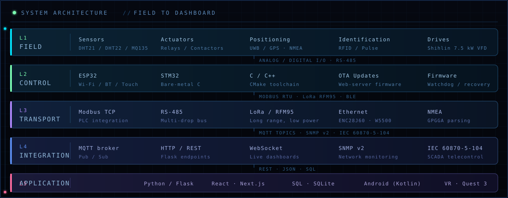
درایورهای خام، مسیرهای OTA، بازیابی واچداگ، تنظیمات روی دستگاه. بودجهٔ خواب برای نودهای باتریخور.
Modbus RTU/TCP، RS-485، MQTT، IEC 60870-5-104. مهندسی معکوس نقشهٔ رجیستر و یکپارچهسازی VFD/PLC.
۸۶۸ مگاهرتز، چندگرهای، با در نظر گرفتن duty cycle. جمعکنندهٔ مرکزی و در صورت نیاز ارسال به فضای ابری.
Flask، React، SQL. نگهداری سریهای زمانی، آستانههای هشدار، نمای نقشمبنا. خروجی CSV.
اعداد مستقیم از API گیتهاب. بدون تخمین، بدون عدد بازاریابی.
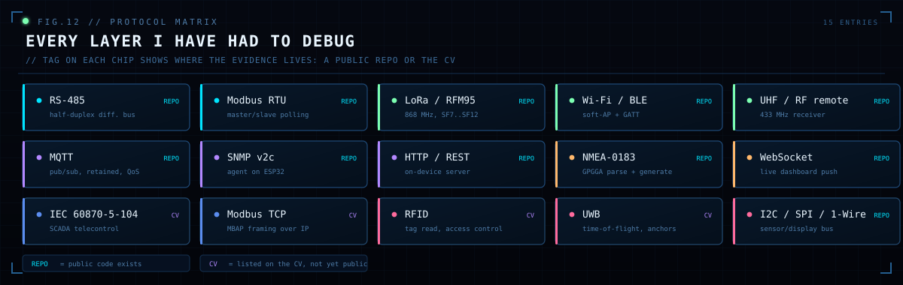
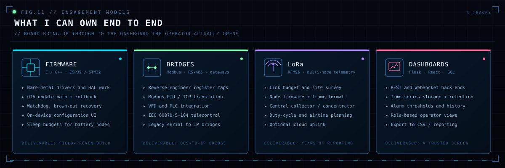
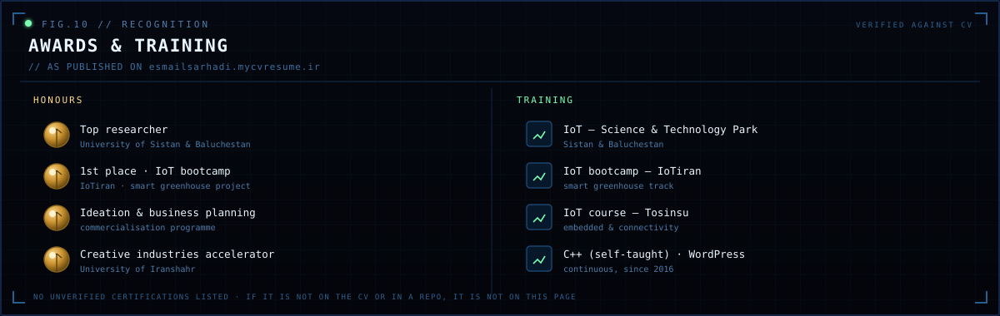
اسکلوسکوپ، دود هویه، بردبورد و مولتیمتری که هیچوقت آنچه میخواهم نشان نمیدهد. هیچ commit در گراف، همه در محصول نهایی.
گرههای میدانی، دروازه، بروکر، داشبورد. نقاط، جریان زندهٔ پاکت روی هر لینک.
فریمور واقعی ESP32، نه یک نمونهٔ ساختگی. اسکلت سرور OTA وبی که هر محصول دیگری از آن شروع شد.
آمادهٔ همکاری در: فریمور سیستمهای نهفته · اتوماسیون صنعتی · Modbus/SCADA · شبکههای حسگر LoRa · ساخت محصول IoT · زاهدان / دورکاری